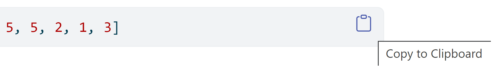
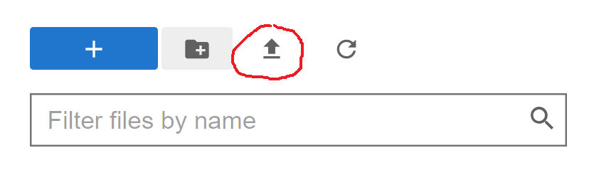
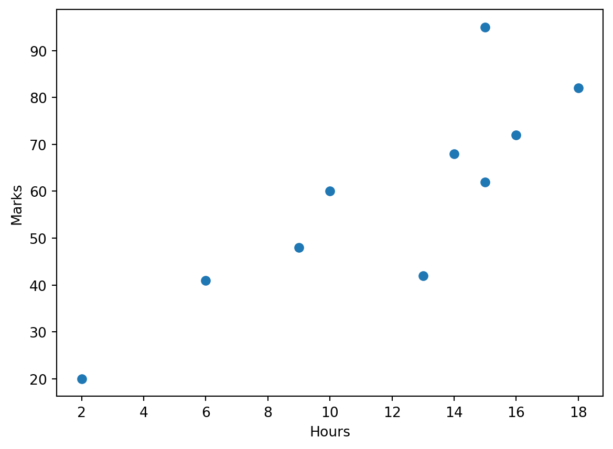
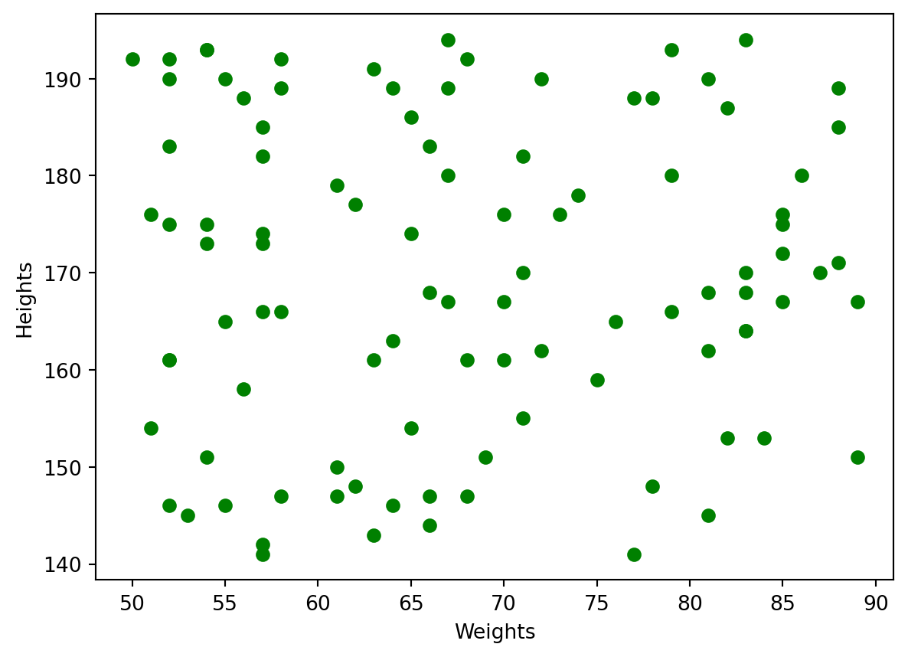
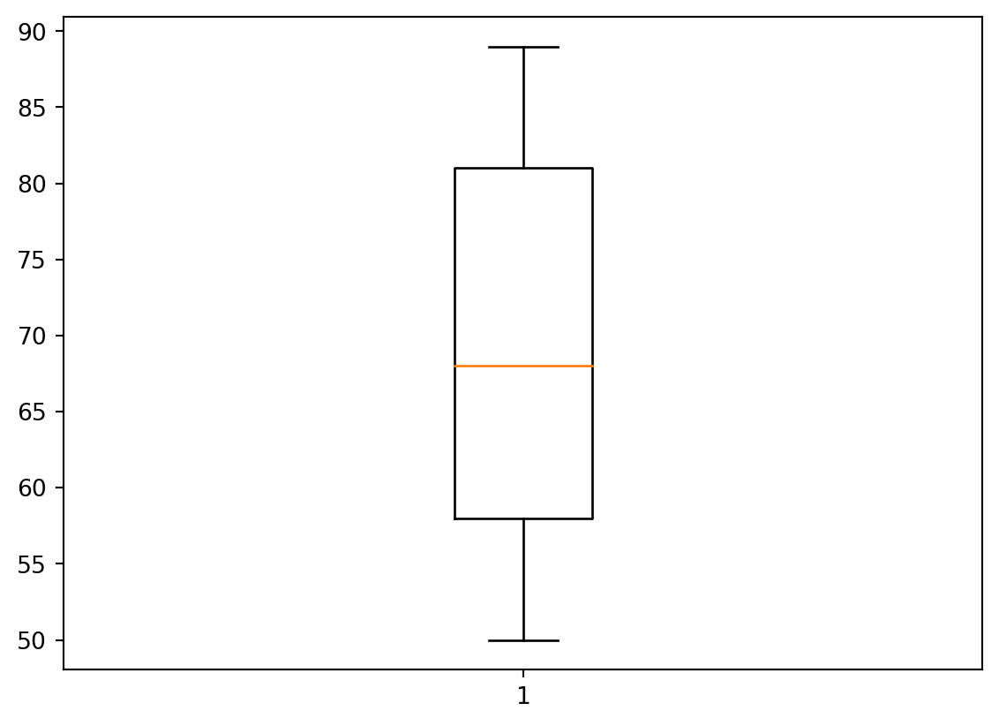
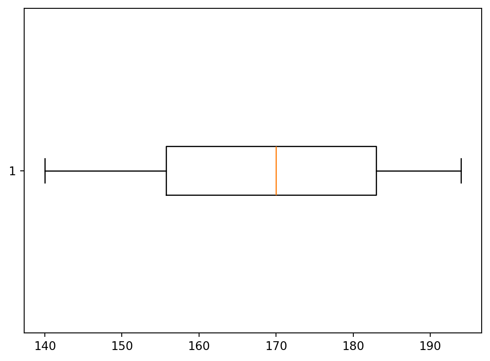
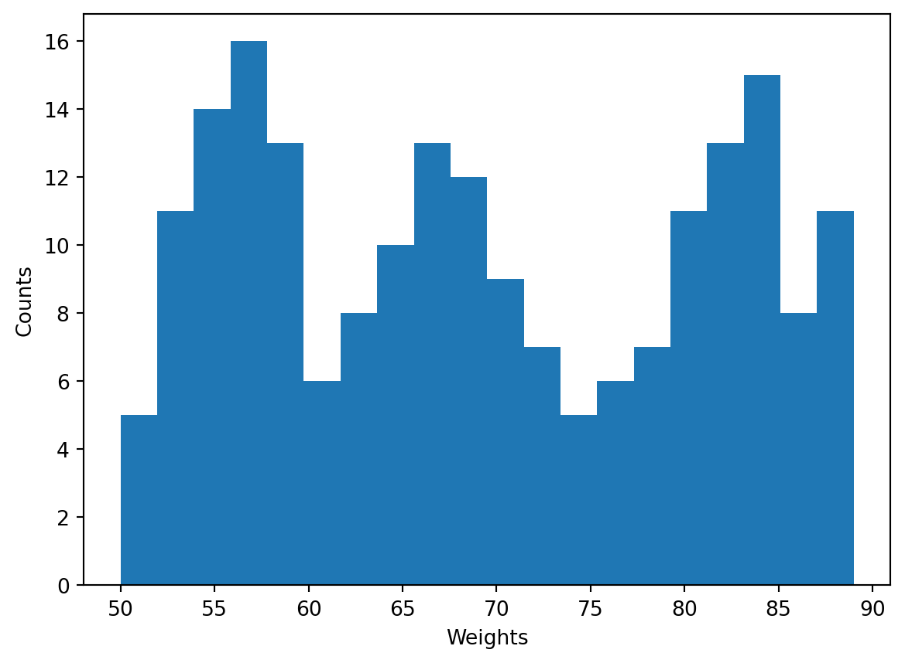
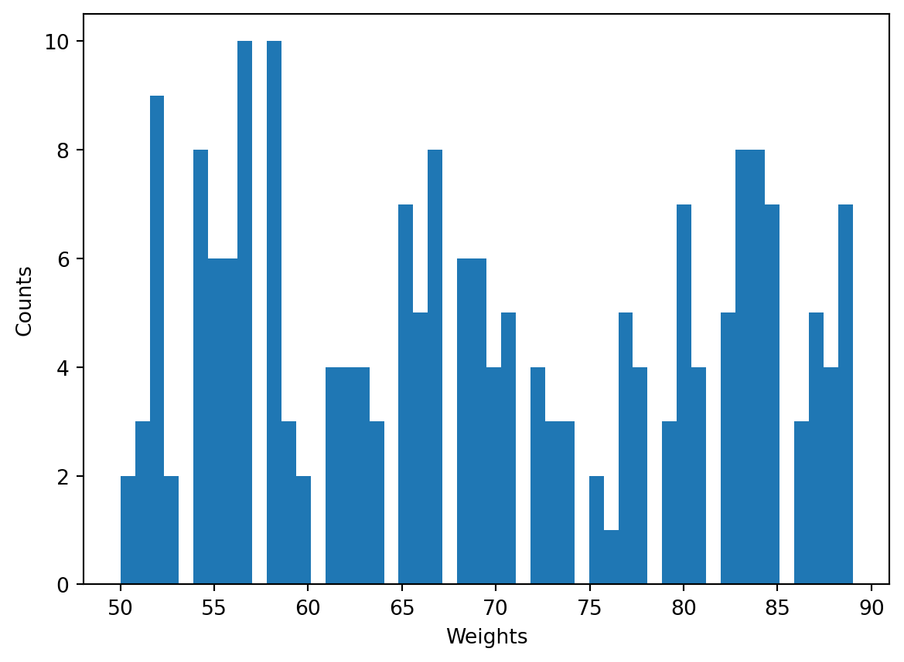
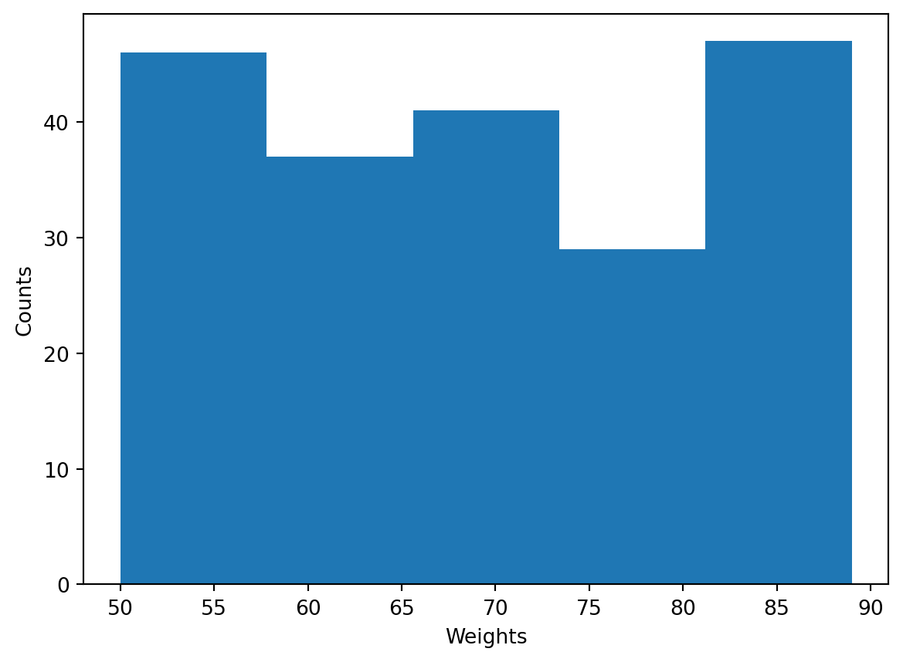
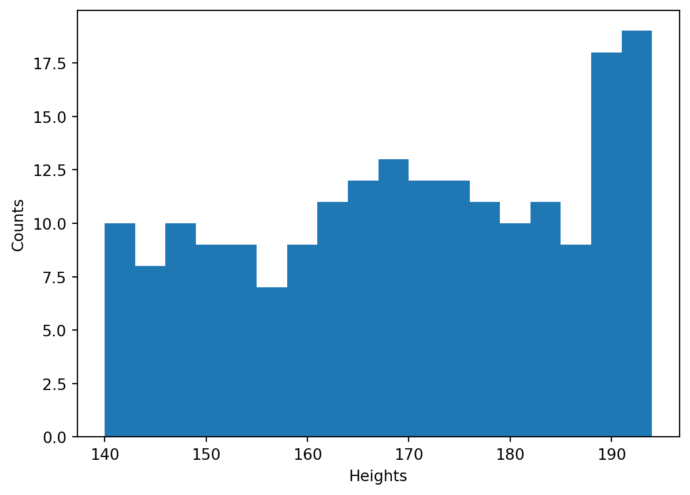

import numpy as npLab 1 - Solutions
As you know, statistics deals with data. There are several ways how to load data to Python.
“manual” definition of a dataset;
importing data from a file;
generating random data.
In this lab we consider the first two of them.
There are several ways to calculate mean, mode, median, variance and other descriptive characteristics in Python. We will use numpy library for this, so run at the beginning of your Jupyter notebook the following command
1 Main statistical characteristics
Manual definition of the data
We can define data manually, e.g. we assign a list of values to a variable:
a = [2, 1, 3, 4, 2, 6, 4, 0, 1, 1, 3, 3, 4, 1, 1, 5, 5, 2, 1, 3]This is a bit tedious precedure, and if you start to re-type this in your https://anaconda.com/app/ Jupyter Notebook you may make a mistake. It may be better to copy the previous line of the code and paste into the notebook. To copy it, you may e.g. hover the mouse above the right end of the grey area with code and click the appeared icon:

Despite some of operations below would work with lists, the lists are not very convenient for Maths, e.g.
2 * [1,2][1, 2, 1, 2]whereas you would probably expect to get [2,4]. To work with lists as vectors, we convert them into Numpy arrays, e.g.
np.array([1,2])array([1, 2])then it will work as expected:
2 * np.array([1,2])array([2, 4])1.1
Convert the list a defined above to a Numpy array, reassign the result again to the variable a:
Code
a = np.array(a)
aarray([2, 1, 3, 4, 2, 6, 4, 0, 1, 1, 3, 3, 4, 1, 1, 5, 5, 2, 1, 3])Mean
To calculate the mean of all values in the array \(a=(a_1,\ldots,a_{20})\), i.e.
\[ \bar{a} = \frac{a_1+\ldots+a_{n}}{n}, \]
for \(n=20\), we run
np.mean(a)2.6(we could calculate this and further characteristics directly, e.g. for mean one could write sum(a)/len(a), however, the usage of special functions is more efficient in the case of large datasets).
Median
Similarly, to calculate the median of data, we can use np.median method.
1.2
Find the median of a. Check the answer.
Code
np.median(a)2.5Population variance and standard deviation
To calculate the population variance of a, i.e. the quantity
\[ \sigma^2 = \dfrac{(a_1-\bar a)^2+\ldots+(a_n-\bar a)^2}{\color{red}n}, \]
we use np.var method and to calculate the population standard deviation \(\sigma=\sqrt{\sigma^2}\) we use np.std method. For example,
np.var(a)2.6399999999999997Again, this is faster and more convenient than calculating them directly, e.g. instead of np.var(a) we could write
sum((a - np.mean(a))**2)/len(a)2.64
Do not miss this
Note that we have used, in the last command, array (vector) operations: a - np.mean(a) means that we subtract the number np.mean(a) from each component of a, and the result is again an array of \(a_1-\bar a,\ldots,a_n-\bar{a}\). Simmilarly, **2 means that we square each component of the array a - np.mean(a), and the result is again an array.
1.3
Find the standard deviation of a. Check the answer.
Code
np.std(a)1.624807680927192Sample variance and standard deviation
To get the sample variance
\[ s^2 = \dfrac{(a_1-\bar a)^2+\ldots+(a_n-\bar a)^2}{\color{red}n-1}. \]
one could, of course, use that
\[ s^2=\frac{n}{n-1} \sigma^2, \]
(where \(n=20\) for the given a), however, it is better to use a special key ddof = 1 inside np.var, where ddof stands for “delta degree of freedom”:
np.var(a, ddof = 1)2.7789473684210524We can check that indeed e.g.
np.var(a, ddof = 1) == np.var(a)*20/19True1.4
Find the sample standard deviation for a using an analogy with the previous commands. Check the answer.
Code
np.std(a, ddof = 1)1.66701750693298132 Importing data from CSV files
We may get data from a file. A popular file format to store data is CSV (that stands for “comma-separated values”). You may download to your device an example of a CSV file from here: sportsclub.csv. It contains fake data about weights in kg and heights in cm of \(200\) members of a sports club. After this, please, upload the file to your working folder in https://anaconda.com/app/, using the ulpoad button:

Now you can load it in your code, e.g. using Pandas library:
import pandas as pd
df = pd.read_csv("sportsclub.csv")You may check e.g. the first \(6\) lines of the file.
df.head(6)| Weight | Height | |
|---|---|---|
| 0 | 70 | 167 |
| 1 | 83 | 164 |
| 2 | 66 | 183 |
| 3 | 57 | 141 |
| 4 | 82 | 187 |
| 5 | 62 | 148 |
Now we may get the values of the first column (weights):
df["Weight"]0 70
1 83
2 66
3 57
4 82
..
195 87
196 50
197 70
198 56
199 80
Name: Weight, Length: 200, dtype: int64The output is a Pandas series. It may be converted to a Numpy array:
b = df["Weight"].to_numpy()
b[0:6] # We show here, for an example, the first six elements only, from 0th to 5tharray([70, 83, 66, 57, 82, 62], dtype=int64)2.1
Find the average weight of the members of the sports club. Check your answer.
Code
np.mean(b)69.342.2
Assign to variable d the Numpy array of the heights of all members of the sports club. Find the median and the variance of the heights. Check your answers.
Code
d = df["Height"].to_numpy()
[np.median(d), np.var(d)][170.0, 254.2239]2.3
Assign to variable e the Numpy array of the body mass indexes (BMI) of the club members: if a member has weight \(w\) kg and height \(h\) cm, then its BMI is \(10^4*\dfrac{w}{h^2}\). Remember that in Python all array operations are done component-wise. Find the mean and the standard deviation of e. Check your answer.
Code
e = 10**4 * b/(d*d)
[np.mean(e), np.std(e)][24.900949943455288, 6.54617400802904]3 Visualisation diagrams
We will use matplotlib library for visualisation.
Scatter plot
We start with bivariate data. Let’s create the scatter plot from Example 1.28 of the typed Lecture notes. The table below shows the exam marks for students and the corresponding time (in hours) the students spent revising for the exam.
| Revision Hours | 18 | 2 | 13 | 14 | 6 | 15 | 16 | 9 | 10 | 15 |
|---|---|---|---|---|---|---|---|---|---|---|
| Mark | 82 | 20 | 42 | 68 | 41 | 95 | 72 | 48 | 60 | 62 |
The scatter plot code is the following:
import matplotlib.pyplot as plt
hours = [18, 2, 13, 14, 6, 15, 16, 9, 10, 15]
marks = [82, 20, 42, 68, 41, 95, 72, 48, 60, 62]
plt.scatter(hours, marks)
plt.xlabel('Hours')
plt.ylabel('Marks')
plt.show()
One can customise various parameters in the plot, e.g. to have red markers one could write plt.scatter(hours, marks, color = 'red') (or even color = 'r').
3.1
Take the first \(100\) members of the sports club from the sportsclub.csv discussed before, and draw the scatter plot of heights (vertical axis) over weights (horizontal axis). Use green colours for the markers. Label the axes appropriately.
Code
import matplotlib.pyplot as plt
weights = b[0:100]
heights = d[0:100]
plt.scatter(weights, heights, color = 'g')
plt.xlabel('Weights')
plt.ylabel('Heights')
plt.show()
Box plot
Consider now a box-and-whisker plot. The following code produce the blox plot for the weights of all members of the sports club:
plt.boxplot(b)
plt.show()
By default, the box plot is vertical. To make it horizontal, use the key vert = False in boxplot method.
3.2
Plot the horizontal box plot for the heights of all members of the sports club.
Code
plt.boxplot(d, vert = False)
plt.show()
Remark. Recall that the box plot visualises, in particular, the rectangle bound by the lower and upper quartiles: \(Q_1\) and \(Q_3\), whereas the coloured line represents the median \(Q_2\). We know that \(Q_2\) is calculated differently if the sample has even or odd number of elements. By definition, recall, \(Q_1\) and \(Q_3\) are medians of the lower half and upper halves of the ordered sample. However, it’s a question of agreement whether to include the median \(Q_2\) to both halves or not, in the case when the number of elelements is odd. For example, let the data be \[ 1,2,3,4,5,6,7. \] The median is \(4\), i.e. \(Q_2=4\). Now, we may say that the lower half is \(1,2,3\), its median is \(2\), i.e. \(Q_1=2\), similarly then the upper half is \(5,6,7\), hence, \(Q_3=6\). Another approach is to say that the lower part is \(1,2,3,4\) (including \(Q_2=4\)), and it’s median is \(\frac{2+3}{2}=2.5\), i.e. \(Q_1=2.5\); similarly then the upper half is \(4,5,6,7\), and hence, \(Q_3=5.5\). Python in Mathplotlib uses the second approach.
Histogram
Let’s create the histogram for the weights of all sports club members. Conside the histogram with \(20\) bins.
import matplotlib.pyplot as plt
plt.hist(b, 20)
plt.xlabel('Weights')
plt.ylabel('Counts')
plt.show()
Recall that the change of the number of bins may drastically change the shapce of a histogram, e.g.
import matplotlib.pyplot as plt
plt.hist(b, 50) # 50 bins
plt.xlabel('Weights')
plt.ylabel('Counts')
plt.show()
or
plt.hist(b, 5) # 5 bins
plt.xlabel('Weights')
plt.ylabel('Counts')
plt.show()
3.3
Plot the histogram of heights of the all members of the sports club. Make all the bins of the size \(3\) cm (perhaps, all but the last, the most right, one). To calculate the number of bins, use functions min() and max() and also round().
Solution. The heights are stored in the array d. The range of values of heights is from min(d) to max(d) (i.e. from minimal height to maximal height); all heights are in centimeneters. To divide this range on parts of size \(3\) cm, we would need (max(d)-min(d))/3 parts. Since the latter number may be decimal, we round it with function round.
Code
n_bins = round((max(d) - min(d))/3)
plt.hist(d, n_bins)
plt.xlabel('Heights')
plt.ylabel('Counts')
plt.show()